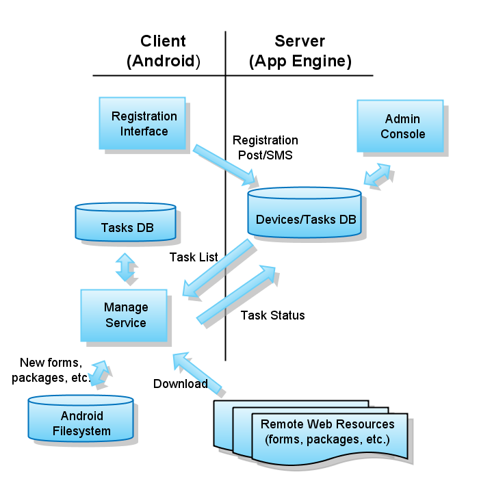

ODK Manage is a component of Open Data Kit. See the Open Data Kit Design Doc for general information about ODK and the role of ODK Manage.
For large ODK deployments, consisting of hundreds of phones spread over large geographic regions, keeping track of deployed phones and keeping forms, data, and software up-to-date is a significant logistical challenge. In a pilot study at Grameen App Lab in Uganda involving about 30 operators, deploying each new version of the software and forms required hiring a technical specialist to travel to each operator site and update/configure their phone. As a result, we were only able to push one (?) upgrade of the forms and software to the phone throughout the three-month deployment. This resulted in a slow response to technical or usability bugs and a reduced possibility for design iteration. In addition, the lack of any centralized information about device/operator status made it difficult to recognize and respond to issues such as broken or lost phones (?). As ODK scales to larger deployments, these logistical difficulties will become even more serious.
[How are these logistics currently handled in other platforms, e.g. JavaRosa? --alerer]
ODK Manage will provide central, remote management of mobile devices and operators throughout a deployment. The following remote tasks will be enabled by Manage:
The ODK Manage web application UI must allow supervisors to monitor all the phones in a deployment from a central page. For example, a table view could be used to display all the devices. The UI must also allow a supervisor to quickly organize devices into 'device groups' so that updates can be pushed to these groups as a whole. For example, a new AIDS survey may need to be pushed to the group of devices involved in AIDS monitoring.
The ODK Manage Android application will have as little UI as possible, since it should be as transparent as possible to phone operators. A bare-bones UI will probably be needed for initial phone configuration by a trained worker.
The ODK Manage Android client must function in an environment where data connection is intermittent and occurs over multiple modalities, each with their own limitations and fiscal cost. Therefore, the client must be capable of storing pending tasks until they can be executed. It also must be aware of network connectivity, and attempt to perform pending tasks that require connectivity when it becomes available. Eventually, the client should support SMS push of tasks from the server rather than constantly polling for new tasks. The client should also eventually be capable of intelligently deciding how to efficiently utilize different connection types (e.g. more urgent tasks can be performed over mobile networks, while less urgent tasks can wait for wifi or USB).
ODK Manage contains two components: the mobile client (implemented on Android) and the server (implemented on appengine/GWT). The interaction workflow between these two components is illustrated in Figure 1.
The first component of the client is the AdminActivity. This is a simple Android Activity that allows Manage to be configured before or during use. It includes text fields for entering the server domain name and SMS phone number, and buttons for registering the phone. Registration may become automated in future versions, and this functionality may be wrapped into the ODKManageService.
The ODKManageService is the main component of the client. It is an Android Service - i.e., a permanent background process - that looks for new tasks, executes them, and updates the server with its status. the ODKManageService has a (customizable?) strategy for when to perform different actions based on the communication resources available.
The ODKManageService maintains a connection to an sqllite database, where it stores all tasks. Task objects have the following fields: id, type, name, url, extras, status. Status may have the values PENDING, FAILED, or SUCCESS.
The Manage client also uses an IntentReceiver to detect (a) incoming SMS from the server, and (b) changes in GPRS, wifi, or other connectivity. The IntentReceiver filters and parses these intents and alerts the ODKManageService of relevant events.
The server uses JDO object persistence backed by the Google App Engine datastore. The main data classes are Devices and Tasks. The Device class contains all information about a particular device; device IMEI is used as the primary key for this class. Each device has an associated list of Tasks. Each task has a type, a status, and other optional (task-type specific) fields such as name and URL. Another data class called DeviceGroup acts as a way of organizing devices into groups so that tasks can be performed on groups of devices.
The Manage admin console is located at /admin.html. To access this page, users must have their google email account listed in a configuration file in the ODKManage source (this should be improved in a future version). The admin console provides a table view showing information about all devices and allows administrators to organize devices into devices groups. Tasks can then be added to individual devices, device groups, or to all devices. The administrator can also send SMS to a device/group alerting it of new tasks.
The Manage server uses servlets to interact with clients. The /register URL accepts registration messages, the /tasklist URL provides task lists to phones, and the /update URL accepts updates from phones.
TODO: HOW DO WE IMPLEMENT SMS?
Phone registration occurs over either HTTP POST to the /register URI, or SMS with the "reg" keyword preceding the data. The registration information is contained as a series of parameters (e.g. imei=12345&imsi=...) in either the POST or SMS body.
| Name | Required | Type | Description |
|---|---|---|---|
| imei | Yes | string | The device IMEI. |
| phonenumber | No | string | The device phone number. |
| sim | No | string | The device SIM serial number. |
| imsi | No | string | The device phone number. |
| userid | No | string | The user ID set in the client settings. |
A list of tasks is communicated from the server to the client via XML. The tasklist is requested from the server with a GET request to: /tasklist?imei={imei}.
The format for the tasklist is as follows:
The name, url, and extras fields are optional and based on the task type.
It is not clear whether other types of data may be required in a task element.
Perhaps tasks require arbitrary properties (e.g.
Attributes mean different things for different task types. Here's a breakdown:
| Task Type | Name | URL | Extras |
|---|---|---|---|
| ADD_FORM | form name or null | form download URL | null |
| INSTALL_PACKAGE | package name (e.g. "org.odk.collect.android") | package download URL | null |
The client can update its status to the server via HTTP POST.
The format for a client update is as follows:
Server HTTP authentication is unnecessary because the client polls locations on the server (we are not worried about man-in-the-middle attacks, etc. at the moment). Over SMS, server authentication can be performed by looking at the sender phone number. The server domain and SMS # are registered with the phone so these authentication steps can be performed.
Client authentication is less important than server authentication in v1, because a malicious client cannot cause undesirable server behavior (whereas a malicious server could cause arbitrary packages to be downloaded on the client, etc.) In later versions, client authentication (e.g. username/password) will be required.
The server admin page does require authentication. In v1, admin page access will be limited to a set of email addresses hard-coded in an appengine configuration file. Full user management will be implemented in a later version.
For project information about ODK please visit: http://code.google.com/p/open-data-kit/trunk/odk-manage
Currently, Adam Lerer is assigned to development/maintenance for ODK Manage.
Code location: http://code.google.com/p/open-data-kit/trunk/odk-manage
Note: we fully expect all code generated by the ODK project to be made available to the open source community.